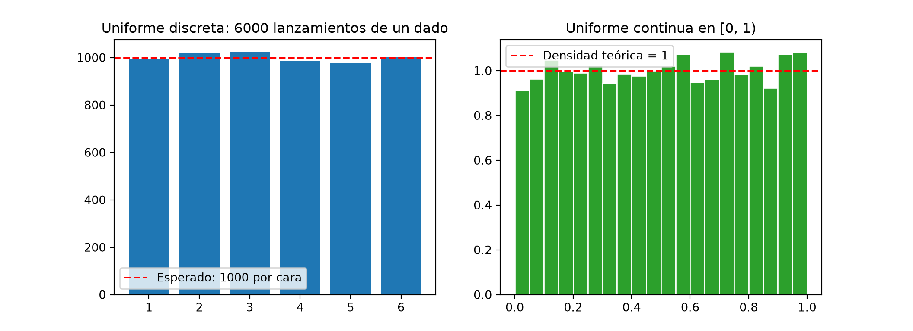
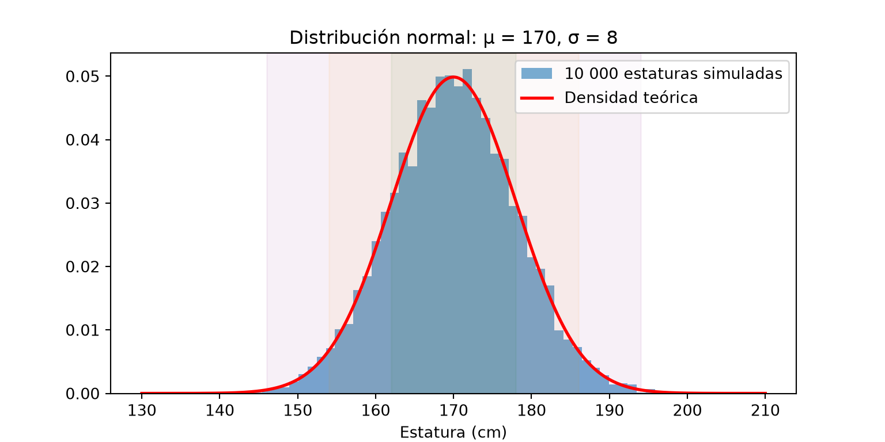
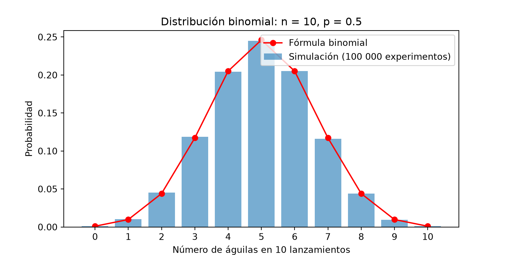
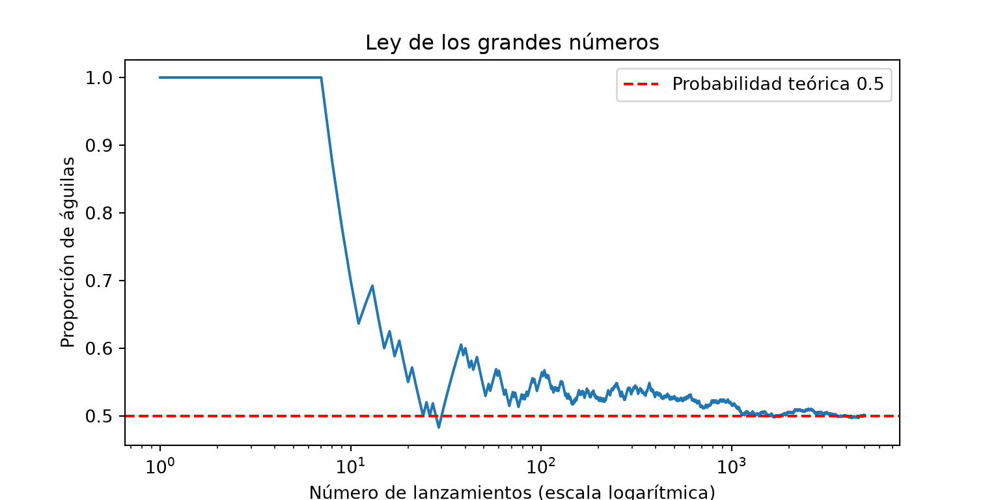
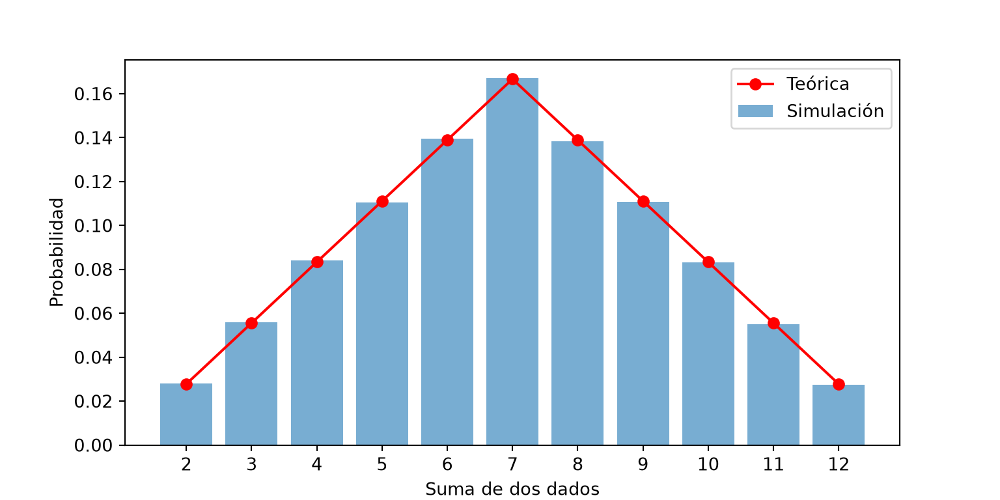
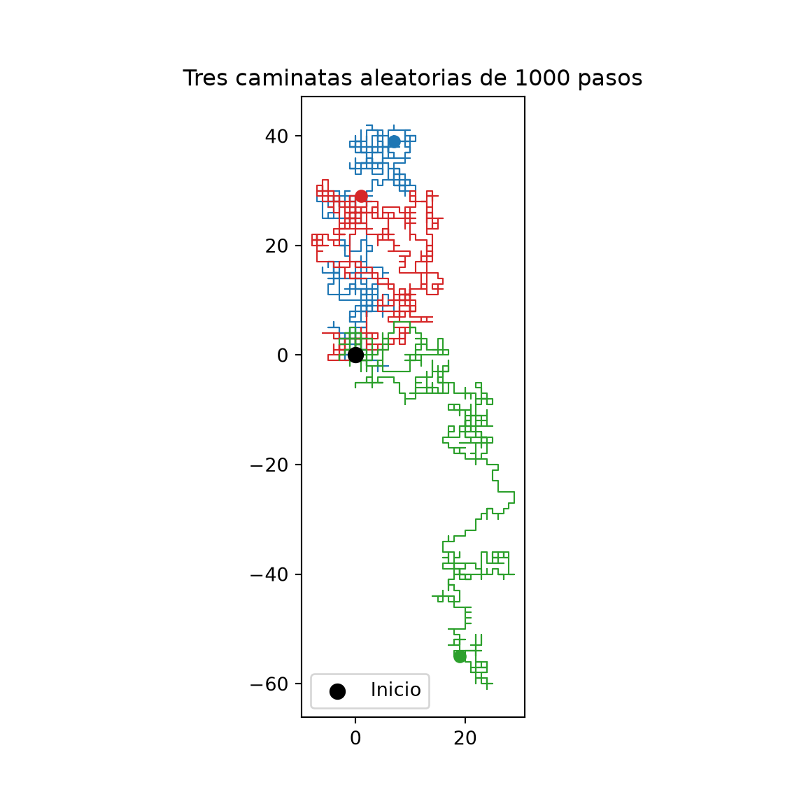
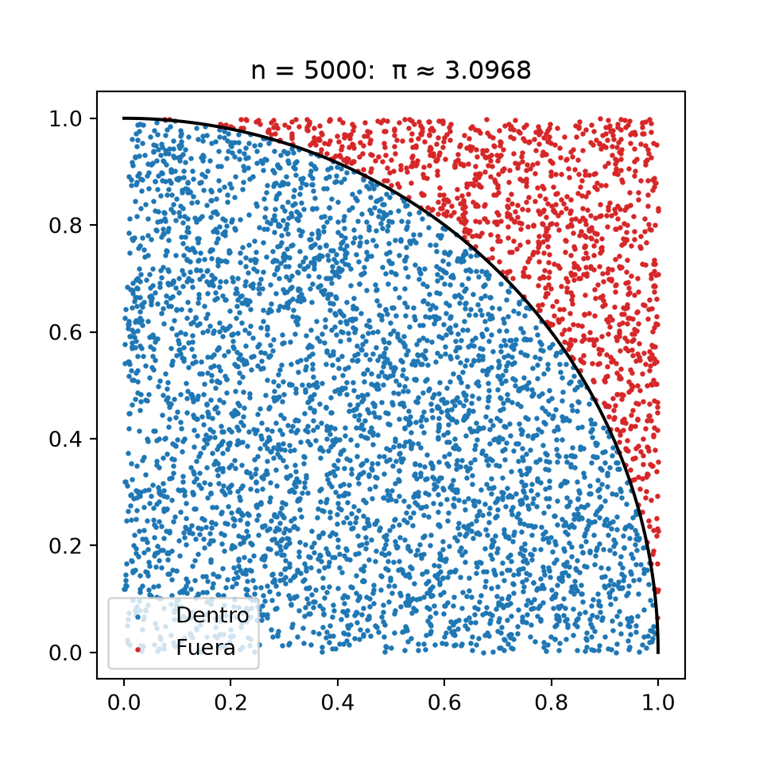
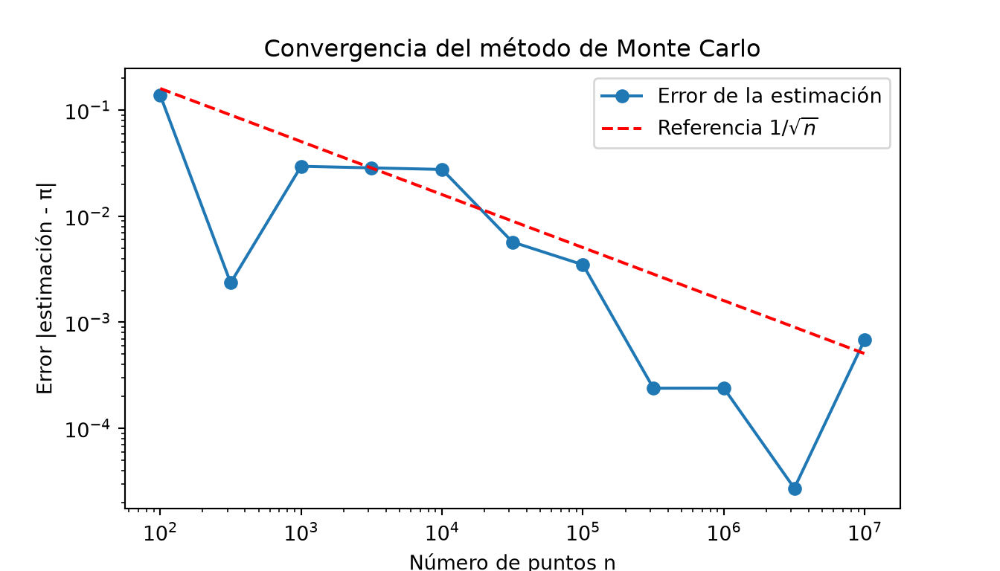
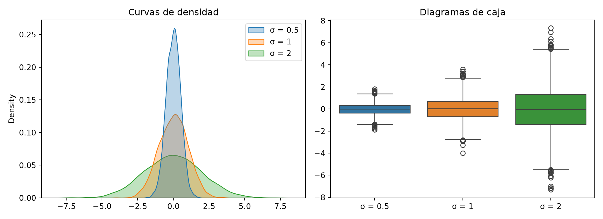

Código
import random
import numpy as np
import matplotlib.pyplot as pltFecha: 24 de noviembre, 2026
Invitado: Dr. Victor Hugo Muñiz Sánchez (VHMS); CIMAT unidad Monterrey
¿Cuál es la probabilidad de que, en un grupo de 23 personas, dos cumplan años el mismo día? ¿Cómo se puede calcular \(\pi\) lanzando dardos al azar? Preguntas como estas se pueden responder simulando el azar con la computadora. En este capítulo aprenderemos a generar números aleatorios y a usarlos para resolver problemas.
Al terminar este capítulo podrás:
random y con NumPy.import random
import numpy as np
import matplotlib.pyplot as pltUn número aleatorio es un valor que no se puede predecir antes de obtenerlo, como el resultado de lanzar un dado. Aunque no sepamos qué saldrá en un lanzamiento, sí sabemos cómo se comportan muchos lanzamientos: cada cara sale, en promedio, una de cada seis veces.
Una computadora sigue instrucciones exactas, así que no puede producir azar “de verdad”. Lo que hace es usar un generador de números pseudoaleatorios: un algoritmo que, a partir de un número inicial llamado semilla (seed), produce una sucesión de números que parecen aleatorios y pasan las pruebas estadísticas de aleatoriedad.
random.seed(2026)
print([random.randint(1, 6) for _ in range(10)])[1, 3, 5, 5, 6, 1, 2, 5, 5, 5]random.seed(2026) # La misma semilla...
print([random.randint(1, 6) for _ in range(10)]) # ...produce la misma sucesión[1, 3, 5, 5, 6, 1, 2, 5, 5, 5]| Sin fijar la semilla | Fijando la semilla | |
|---|---|---|
| Resultado | Distinto cada vez que ejecutas el programa. | Siempre el mismo. |
| Útil para | Juegos, sorteos. | Reproducir resultados: depurar, compartir y documentar una simulación. |
Los números pseudoaleatorios de random y NumPy no son seguros para contraseñas o criptografía, porque conociendo la semilla se puede predecir la sucesión. Para eso Python tiene el módulo secrets.
| Área | Aplicación |
|---|---|
| Simulación | Modelar fenómenos con incertidumbre: filas de espera, epidemias, tráfico, el clima. |
| Matemáticas | Estimar áreas, integrales y probabilidades difíciles de calcular (método de Monte Carlo). |
| Estadística | Tomar muestras aleatorias, hacer experimentos y pruebas de hipótesis. |
| Ciencia de datos | Dividir datos en entrenamiento y prueba, inicializar modelos de inteligencia artificial. |
| Física y finanzas | Simular partículas, calcular riesgos y precios de inversiones. |
| Juegos | Barajar cartas, lanzar dados, generar mundos. |
randomEl módulo random viene incluido en Python y genera un número a la vez:
| Función | ¿Qué regresa? | Ejemplo |
|---|---|---|
random.seed(n) |
Fija la semilla. | random.seed(2026) |
random.random() |
Un decimal en \([0, 1)\). | 0.119... |
random.uniform(a, b) |
Un decimal entre a y b. |
random.uniform(1.5, 2.5) |
random.randint(a, b) |
Un entero entre a y b, incluyendo b. |
random.randint(1, 6) |
random.choice(lista) |
Un elemento al azar. | random.choice(["águila", "sol"]) |
random.choices(lista, k=n) |
n elementos con reemplazo. |
random.choices("ABC", k=5) |
random.sample(lista, k=n) |
n elementos sin reemplazo. |
random.sample(range(1, 50), k=6) |
random.shuffle(lista) |
Revuelve la lista en su lugar. | random.shuffle(cartas) |
random.gauss(mu, sigma) |
Un número con distribución normal. | random.gauss(170, 8) |
random.seed(2026)
print("Decimal en [0, 1):", random.random())Decimal en [0, 1): 0.11911988496396309print("Dado:", random.randint(1, 6))Dado: 5print("Moneda:", random.choice(["águila", "sol"]))Moneda: águilaprint("Melate (6 números del 1 al 56):", sorted(random.sample(range(1, 57), k=6)))Melate (6 números del 1 al 56): [15, 27, 36, 39, 40, 51]cartas = ["A", "2", "3", "4", "5", "6", "7", "8"]
random.shuffle(cartas) # Modifica la lista (es mutable) y regresa None
print("Cartas revueltas:", cartas)Cartas revueltas: ['6', '3', 'A', '2', '4', '5', '7', '8']NumPy genera arreglos completos de números aleatorios de una sola vez, lo que es mucho más rápido para simulaciones grandes. Se usa un generador creado con np.random.default_rng():
rng = np.random.default_rng(seed=2026)
print(rng.random(5)) # 5 decimales en [0, 1)[0.17893481 0.63991317 0.4672684 0.37050053 0.35491733]print(rng.integers(1, 7, size=10)) # 10 dados: enteros de 1 a 6[5 5 5 6 5 2 6 4 1 2]print(rng.uniform(-1, 1, size=3)) # 3 decimales entre -1 y 1[0.9339244 0.83970032 0.27174161]print(rng.choice(["águila", "sol"], size=6))['sol' 'sol' 'águila' 'sol' 'sol' 'sol']print(rng.permutation(10)) # Los números del 0 al 9 en orden aleatorio[9 0 1 7 8 5 6 3 2 4]| Método del generador | ¿Qué genera? |
|---|---|
rng.random(size) |
Decimales en \([0, 1)\). |
rng.integers(low, high, size) |
Enteros de low a high - 1 (¡high no se incluye!). |
rng.uniform(a, b, size) |
Decimales uniformes entre a y b. |
rng.normal(media, desviacion, size) |
Distribución normal. |
rng.binomial(n, p, size) |
Distribución binomial. |
rng.choice(arreglo, size, replace=True) |
Elementos al azar, con o sin reemplazo. |
rng.permutation(arreglo), rng.shuffle(arreglo) |
Revolver (copia / en su lugar). |
random.randint(1, 6) incluye el 6, pero rng.integers(1, 6) no: genera números del 1 al 5. Para un dado con NumPy escribe rng.integers(1, 7), igual que con range(1, 7).
En códigos antiguos verás np.random.seed(0) y np.random.rand(). Siguen funcionando, pero la forma recomendada actualmente es crear un generador con rng = np.random.default_rng(semilla).
random vs. NumPyrandom |
NumPy | |
|---|---|---|
| ¿Viene con Python? | Sí. | Hay que instalarlo. |
| Genera | Un número a la vez. | Arreglos completos. |
| Velocidad para muchos números | Lenta (con ciclos for). |
Muy rápida (vectorizada). |
| Ideal para | Elegir, revolver o sortear pocos elementos. | Simulaciones con miles o millones de datos. |
Una distribución de probabilidad describe qué valores puede tomar una variable aleatoria y con qué frecuencia. Al generar muchos números y hacer un histograma, vemos la forma de la distribución.
Todos los valores de un intervalo son igualmente probables. Puede ser discreta (un dado: 1, 2, …, 6) o continua (cualquier decimal entre 0 y 1):
rng = np.random.default_rng(2026)
dados = rng.integers(1, 7, size=6000)
decimales = rng.uniform(0, 1, size=6000)
fig, axs = plt.subplots(1, 2, figsize=(11, 4))
axs[0].hist(dados, bins=np.arange(0.5, 7.5, 1), rwidth=0.8, color="tab:blue")
axs[0].axhline(1000, color="red", linestyle="--", label="Esperado: 1000 por cara")
axs[0].set_title("Uniforme discreta: 6000 lanzamientos de un dado")
axs[0].legend()
axs[1].hist(decimales, bins=20, density=True, color="tab:green", edgecolor="white")
axs[1].axhline(1, color="red", linestyle="--", label="Densidad teórica = 1")
axs[1].set_title("Uniforme continua en [0, 1)")
axs[1].legend()
plt.show()
Con density=True, el área total del histograma vale 1, y así lo podemos comparar con la función de densidad teórica.
La distribución normal (o gaussiana) tiene forma de campana: los valores se concentran alrededor de la media \(\mu\) y se vuelven menos frecuentes al alejarse, según la desviación estándar \(\sigma\). Describe estaturas, errores de medición, calificaciones y muchos otros fenómenos. Su función de densidad es:
\[f(x) = \frac{1}{\sigma\sqrt{2\pi}}\, e^{-\frac{(x - \mu)^2}{2\sigma^2}}\]
mu, sigma = 170, 8
estaturas = rng.normal(mu, sigma, size=10_000)
x = np.linspace(130, 210, 300)
densidad = np.exp(-(x - mu)**2 / (2 * sigma**2)) / (sigma * np.sqrt(2 * np.pi))
plt.figure(figsize=(8, 4))
plt.hist(estaturas, bins=50, density=True, color="tab:blue", alpha=0.6, label="10 000 estaturas simuladas")
plt.plot(x, densidad, color="red", linewidth=2, label="Densidad teórica")
for k, color in [(1, "green"), (2, "orange"), (3, "purple")]:
plt.axvspan(mu - k * sigma, mu + k * sigma, color=color, alpha=0.06)
plt.xlabel("Estatura (cm)")
plt.legend()
plt.title("Distribución normal: μ = 170, σ = 8")
plt.show()
La regla 68-95-99.7 dice qué fracción de los datos queda a 1, 2 y 3 desviaciones estándar de la media. Comprobémosla con la simulación:
for k, teorico in [(1, 0.6827), (2, 0.9545), (3, 0.9973)]:
fraccion = np.mean(np.abs(estaturas - mu) < k * sigma)
print(f"A {k}σ de la media: simulado = {fraccion:.4f} teórico = {teorico}")A 1σ de la media: simulado = 0.6798 teórico = 0.6827
A 2σ de la media: simulado = 0.9533 teórico = 0.9545
A 3σ de la media: simulado = 0.9976 teórico = 0.9973np.mean() de un arreglo de True y False calcula la fracción de valores True, porque True vale 1 y False vale 0.
La distribución binomial cuenta el número de éxitos en \(n\) intentos independientes, cada uno con probabilidad de éxito \(p\). Por ejemplo, el número de águilas al lanzar 10 monedas (\(n = 10\), \(p = 0.5\)). La probabilidad de obtener exactamente \(k\) éxitos es:
\[P(X = k) = \binom{n}{k} p^k (1 - p)^{n - k}\]
from math import comb
n, p = 10, 0.5
aguilas = rng.binomial(n, p, size=100_000)
k = np.arange(n + 1)
teorica = np.array([comb(n, i) * p**i * (1 - p)**(n - i) for i in k])
valores, conteos = np.unique(aguilas, return_counts=True)
plt.figure(figsize=(8, 4))
plt.bar(valores, conteos / len(aguilas), color="tab:blue", alpha=0.6, label="Simulación (100 000 experimentos)")
plt.plot(k, teorica, "ro-", label="Fórmula binomial")
plt.xticks(k)
plt.xlabel("Número de águilas en 10 lanzamientos")
plt.ylabel("Probabilidad")
plt.legend()
plt.title("Distribución binomial: n = 10, p = 0.5")
plt.show()
print("Media simulada:", aguilas.mean(), " Media teórica n·p =", n * p)Media simulada: 4.98876 Media teórica n·p = 5.0np.unique(..., return_counts=True) regresa los valores distintos de un arreglo y cuántas veces aparece cada uno.
| Distribución | Parámetros | Tipo | Ejemplo | NumPy |
|---|---|---|---|---|
| Uniforme | \(a\), \(b\) | Discreta o continua | Dado, número al azar entre 0 y 1 | rng.integers(), rng.uniform() |
| Normal | \(\mu\), \(\sigma\) | Continua | Estaturas, errores de medición | rng.normal() |
| Binomial | \(n\), \(p\) | Discreta | Águilas en \(n\) volados, piezas defectuosas | rng.binomial() |
Si lanzas una moneda pocas veces, la proporción de águilas puede estar lejos de \(0.5\). Pero al aumentar el número de lanzamientos, la proporción se acerca a la probabilidad teórica. Esta es la ley de los grandes números, y es la razón por la que las simulaciones funcionan:
rng = np.random.default_rng(7)
volados = rng.integers(0, 2, size=5000) # 1 = águila, 0 = sol
proporcion = np.cumsum(volados) / np.arange(1, 5001) # Proporción acumulada
plt.figure(figsize=(8, 4))
plt.plot(np.arange(1, 5001), proporcion, color="tab:blue")
plt.axhline(0.5, color="red", linestyle="--", label="Probabilidad teórica 0.5")
plt.xscale("log")
plt.xlabel("Número de lanzamientos (escala logarítmica)")
plt.ylabel("Proporción de águilas")
plt.legend()
plt.title("Ley de los grandes números")
plt.show()
np.cumsum() calcula la suma acumulada: el número de águilas obtenidas hasta cada lanzamiento.
Una simulación imita un experimento aleatorio muchas veces para estimar probabilidades o comportamientos. La receta es siempre la misma:
rng = np.random.default_rng(2026)
n = 100_000
suma = rng.integers(1, 7, size=n) + rng.integers(1, 7, size=n)
valores, conteos = np.unique(suma, return_counts=True)
teorica = (6 - np.abs(valores - 7)) / 36 # Hay 6 - |s - 7| formas de sumar s
plt.figure(figsize=(8, 4))
plt.bar(valores, conteos / n, color="tab:blue", alpha=0.6, label="Simulación")
plt.plot(valores, teorica, "ro-", label="Teórica")
plt.xticks(valores)
plt.xlabel("Suma de dos dados")
plt.ylabel("Probabilidad")
plt.legend()
plt.show()
Aunque cada dado es uniforme, su suma no lo es: el 7 es el resultado más probable (\(6/36\)) porque hay más formas de obtenerlo.
Una persona empieza en el origen y en cada paso se mueve una unidad al azar: hacia el norte, sur, este u oeste. ¿Dónde estará después de 1000 pasos? Este modelo, la caminata aleatoria, describe el movimiento de partículas en un fluido (movimiento browniano) y se usa en finanzas:
rng = np.random.default_rng(3)
direcciones = np.array([[1, 0], [-1, 0], [0, 1], [0, -1]])
fig, ax = plt.subplots(figsize=(6, 6))
for semilla_color in ["tab:blue", "tab:red", "tab:green"]:
pasos = direcciones[rng.integers(0, 4, size=1000)] # 1000 pasos al azar
camino = np.vstack([[0, 0], np.cumsum(pasos, axis=0)]) # Posición después de cada paso
ax.plot(camino[:, 0], camino[:, 1], color=semilla_color, linewidth=0.8)
ax.scatter(*camino[-1], color=semilla_color, zorder=3)
ax.scatter(0, 0, color="black", s=60, zorder=4, label="Inicio")
ax.set_aspect("equal")
ax.legend()
ax.set_title("Tres caminatas aleatorias de 1000 pasos")
plt.show()
direcciones[rng.integers(0, 4, size=1000)] es indexación extravagante (capítulo de NumPy): elige 1000 filas al azar de la matriz de direcciones.
El método de Monte Carlo usa números aleatorios para estimar cantidades difíciles de calcular, como áreas, integrales o probabilidades. Su nombre viene del famoso casino de Mónaco, y fue desarrollado en la década de 1940 por los matemáticos Stanisław Ulam y John von Neumann.
Lanzamos puntos al azar en el cuadrado \([0, 1] \times [0, 1]\). La fracción que cae dentro del cuarto de círculo de radio 1 se aproxima a la razón de las áreas:
\[\frac{\text{puntos dentro}}{\text{puntos totales}} \approx \frac{\text{área del cuarto de círculo}}{\text{área del cuadrado}} = \frac{\pi/4}{1} \quad\Longrightarrow\quad \pi \approx 4 \cdot \frac{\text{puntos dentro}}{\text{puntos totales}}\]
rng = np.random.default_rng(2026)
n = 5000
x = rng.random(n)
y = rng.random(n)
dentro = x**2 + y**2 <= 1 # Máscara booleana
pi_estimado = 4 * dentro.mean()
fig, ax = plt.subplots(figsize=(5, 5))
ax.scatter(x[dentro], y[dentro], s=2, color="tab:blue", label="Dentro")
ax.scatter(x[~dentro], y[~dentro], s=2, color="tab:red", label="Fuera")
t = np.linspace(0, np.pi / 2, 100)
ax.plot(np.cos(t), np.sin(t), color="black")
ax.set_aspect("equal")
ax.legend(loc="lower left")
ax.set_title(f"n = {n}: π ≈ {pi_estimado:.4f}")
plt.show()
El error del método de Monte Carlo disminuye como \(\frac{1}{\sqrt{n}}\): para tener un dígito más de precisión se necesitan 100 veces más puntos.
tamanos = np.logspace(2, 7, 11).astype(int) # De 100 a 10 000 000 de puntos
errores = []
for n in tamanos:
puntos = rng.random((n, 2))
estimacion = 4 * np.mean(np.sum(puntos**2, axis=1) <= 1)
errores.append(abs(estimacion - np.pi))
plt.figure(figsize=(7, 4))
plt.loglog(tamanos, errores, "o-", label="Error de la estimación")
plt.loglog(tamanos, 1.6 / np.sqrt(tamanos), "r--", label="Referencia $1/\\sqrt{n}$")
plt.xlabel("Número de puntos n")
plt.ylabel("Error |estimación - π|")
plt.legend()
plt.title("Convergencia del método de Monte Carlo")
plt.show()
En una gráfica log-log (logaritmo en ambos ejes), una relación \(error \propto n^{-1/2}\) se ve como una recta de pendiente \(-1/2\).
El mismo principio sirve para integrales: el valor promedio de \(f\) en \([a, b]\), multiplicado por la longitud del intervalo, es la integral:
\[\int_a^b f(x)\, dx \approx (b - a) \cdot \frac{1}{n}\sum_{i=1}^{n} f(x_i), \qquad x_i \text{ uniformes en } [a, b]\]
Comparemos con el valor exacto de \(\int_0^1 x^2\,dx = \frac{1}{3}\), que podemos calcular con SymPy:
import sympy as sp
s = sp.symbols("x")
exacta = sp.integrate(s**2, (s, 0, 1))
x = rng.uniform(0, 1, size=100_000)
estimacion = (1 - 0) * np.mean(x**2)
print("Exacta (SymPy): ", exacta, "=", float(exacta))Exacta (SymPy): 1/3 = 0.3333333333333333print("Monte Carlo (n=10⁵):", estimacion)Monte Carlo (n=10⁵): 0.33322808778992535Monte Carlo es especialmente útil para integrales en muchas dimensiones o para funciones que no tienen antiderivada conocida, como \(e^{-x^2}\) (ejercicio 7).
| Gráfica | ¿Qué muestra? | Función |
|---|---|---|
| Histograma | La forma de la distribución. | plt.hist(datos, bins=..., density=True) |
| Curva de densidad (KDE) | Una versión “suave” del histograma. | sns.kdeplot(datos) |
| Diagrama de caja | Mediana, cuartiles y valores atípicos. | plt.boxplot(), sns.boxplot() |
| Barras de frecuencias | Distribuciones discretas. | np.unique(..., return_counts=True) + plt.bar() |
| Frecuencia acumulada | Cómo converge una simulación. | np.cumsum() + plt.plot() |
Comparemos tres distribuciones normales con distinta desviación estándar, usando Seaborn (capítulo de Visualización II):
import seaborn as sns
import pandas as pd
rng = np.random.default_rng(2026)
datos = pd.DataFrame({
"σ = 0.5": rng.normal(0, 0.5, 5000),
"σ = 1": rng.normal(0, 1, 5000),
"σ = 2": rng.normal(0, 2, 5000),
})
fig, axs = plt.subplots(1, 2, figsize=(11, 4))
sns.kdeplot(data=datos, fill=True, alpha=0.3, ax=axs[0])
axs[0].set_title("Curvas de densidad")
sns.boxplot(data=datos, ax=axs[1])
axs[1].set_title("Diagramas de caja")
fig.tight_layout()
plt.show()
Mientras más grande es \(\sigma\), más dispersos están los datos: la campana es más ancha y baja, y la caja más larga.
Una simulación bien documentada permite que cualquier persona (incluido tu “yo del futuro”) obtenga exactamente los mismos resultados. Estas son las buenas prácticas:
| Práctica | ¿Por qué? |
|---|---|
| Fija la semilla al inicio del documento. | Sin semilla, cada vez que renderices obtendrás números distintos y el texto ya no coincidirá con los resultados. |
Define los parámetros como constantes al inicio (N_SIMULACIONES = 10_000). |
Es fácil cambiarlos y saber con qué valores se obtuvo cada resultado. |
| Reporta siempre el número de simulaciones \(n\). | Una estimación sin \(n\) no dice qué tan confiable es. |
| Compara con el valor teórico cuando exista. | Así verificas que la simulación es correcta. |
Escribe las fórmulas en LaTeX y las figuras con fig-cap. |
El lector entiende qué se simuló y qué muestra cada gráfica. |
| Usa funciones para cada experimento. | Puedes reutilizarlas y probarlas por separado. |
Un ejemplo de documento de Quarto con una simulación (motor Jupyter):
---
title: "Estimación de π con el método de Monte Carlo"
author: "Tu nombre"
format: html
jupyter: python3
---
## Parámetros
```{python}
import numpy as np
SEMILLA = 2026
N_PUNTOS = 100_000
rng = np.random.default_rng(SEMILLA)
```
## Simulación
Lanzamos `{python} N_PUNTOS` puntos al azar en el cuadrado unitario y estimamos
$\pi \approx 4 \cdot \frac{\text{dentro}}{\text{total}}$.
```{python}
x, y = rng.random(N_PUNTOS), rng.random(N_PUNTOS)
pi_estimado = 4 * np.mean(x**2 + y**2 <= 1)
```
## Resultados
La estimación es `{python} f"{pi_estimado:.4f}"`, con un error de
`{python} f"{abs(pi_estimado - np.pi):.4f}"` respecto a π.Las expresiones `{python} ...` se llaman código en línea: Quarto las reemplaza por su valor al renderizar. Así el texto siempre coincide con los resultados, aunque cambies los parámetros. Funcionan en documentos con el motor Jupyter (jupyter: python3).
| Error | Ejemplo | Corrección |
|---|---|---|
| Confundir los límites de los enteros | rng.integers(1, 6) para un dado (nunca sale 6) |
rng.integers(1, 7) o random.randint(1, 6) |
| No fijar la semilla al documentar | Los resultados cambian en cada render. | rng = np.random.default_rng(2026) al inicio |
| Crear el generador dentro de un ciclo con la misma semilla | Todos los experimentos dan el mismo resultado. | Crea el generador una sola vez, antes del ciclo. |
| Usar pocas simulaciones | Con \(n = 10\), la estimación es poco confiable. | Usa miles o millones de repeticiones. |
Guardar el resultado de shuffle() |
lista = random.shuffle(lista) deja None. |
random.shuffle(lista) en su propia línea. |
Usar random en un ciclo para millones de datos |
Muy lento. | Genera el arreglo completo con NumPy. |
Resuelve los ejercicios en los editores interactivos. Recuerda que lo que escribas no se guarda al recargar la página. Como los resultados son aleatorios, la revisión acepta valores cercanos al teórico.
randomCon el módulo random, fija la semilla en 2026 y lanza un dado 10 000 veces con un ciclo for. Cuenta cuántas veces sale 6 y calcula la proporción. Deja la proporción en la última línea: debe acercarse a \(1/6 \approx 0.1667\).
dado = random.randint(1, 6) (incluye el 6) y proporcion = seises / 10_000.
random.seed(2026)
seises = 0
for _ in range(10_000):
dado = random.randint(1, 6)
if dado == 6:
seises += 1
proporcion = seises / 10_000
proporcionGenera los 10 000 lanzamientos de una sola vez con NumPy y calcula la proporción de seises con una máscara booleana. Deja el arreglo dados en la última línea: la revisión comprobará que contiene los números del 1 al 6.
En rng.integers(low, high), el valor high no se incluye, igual que en range().
dados = rng.integers(1, 7, size=10_000)Genera 10 000 estaturas con distribución normal de media 170 cm y desviación estándar 8 cm. Calcula la fracción de estaturas que están a menos de una desviación estándar de la media (entre 162 y 178 cm) y haz un histograma. Deja la fracción en la última línea.
rng.normal(mu, sigma, size=10_000). “A menos de una desviación de la media” se escribe np.abs(estaturas - mu) < sigma.
estaturas = rng.normal(mu, sigma, size=10_000)
fraccion = np.mean(np.abs(estaturas - mu) < sigma) # ≈ 0.68¿Cuál es la probabilidad de obtener exactamente 5 águilas en 10 volados? Estímala simulando 100 000 experimentos con rng.binomial() y compárala con la fórmula \(\binom{10}{5}\left(\frac{1}{2}\right)^{10}\). Deja la estimación en la última línea.
Son \(n = 10\) intentos con probabilidad \(p = 0.5\): rng.binomial(10, 0.5, size=100_000). La estimación es la fracción de experimentos con aguilas == 5.
aguilas = rng.binomial(10, 0.5, size=100_000)
estimacion = np.mean(aguilas == 5) # ≈ 0.246Escribe la función prob_cumple(n, ensayos) que estime, por simulación, la probabilidad de que en un grupo de n personas al menos dos cumplan años el mismo día (supón 365 días igualmente probables). Para cada ensayo, genera n cumpleaños con rng.integers(0, 365, n): hay repetidos si el conjunto de cumpleaños tiene menos de n elementos.
Un conjunto (set) no tiene elementos repetidos: si len(set(cumples)) < n, hubo al menos dos cumpleaños iguales. La probabilidad es con_repetidos / ensayos.
def prob_cumple(n, ensayos=10_000, semilla=1):
"""Estima la probabilidad de que en un grupo de n personas haya cumpleaños repetidos."""
rng = np.random.default_rng(semilla)
con_repetidos = 0
for _ in range(ensayos):
cumples = rng.integers(0, 365, n)
if len(set(cumples)) < n:
con_repetidos += 1
return con_repetidos / ensayosLa probabilidad exacta para 23 personas es \(1 - \frac{365 \cdot 364 \cdots 343}{365^{23}} \approx 0.5073\). Parece una “paradoja” porque pensamos en nuestro cumpleaños, pero hay \(\binom{23}{2} = 253\) parejas posibles.
Estima \(\pi\) con 100 000 puntos al azar en el cuadrado unitario. Grafica solo los primeros 2000 puntos, coloreados según si caen dentro o fuera del círculo. Deja la estimación en la última línea.
Un punto está dentro del círculo si \(x^2 + y^2 \leq 1\): dentro = x**2 + y**2 <= 1. La proporción de puntos dentro es dentro.mean(); multiplícala por 4.
dentro = x**2 + y**2 <= 1
pi_estimado = 4 * dentro.mean() # ≈ 3.1476La función \(e^{-x^2}\) no tiene una antiderivada que se pueda escribir con funciones elementales, pero su integral se puede estimar. Calcula \(\int_0^1 e^{-x^2}\,dx\) con el método de Monte Carlo usando 100 000 puntos. Compárala con el valor de referencia \(0.746824\). Deja la estimación en la última línea.
Integral ≈ (longitud del intervalo) × (promedio de \(f\) en los puntos): (b - a) * np.mean(np.exp(-x**2)).
estimacion = (b - a) * np.mean(np.exp(-x**2)) # ≈ 0.7468Extra: compara con SymPy: sp.integrate(sp.exp(-s**2), (s, 0, 1)) regresa sqrt(pi)*erf(1)/2.
En un concurso hay 3 puertas: detrás de una hay un auto y detrás de las otras dos, cabras. Eliges una puerta. El conductor, que sabe dónde está el auto, abre otra puerta que tiene una cabra y te pregunta: ¿quieres quedarte con tu puerta o cambiar a la otra que sigue cerrada?
La intuición dice que da igual (50% y 50%), ¡pero no es así! Simula 10 000 concursos para descubrirlo:
premio y la puerta de la eleccion (enteros del 0 al 2) para los 10 000 concursos.eleccion == premio.eleccion != premio: si tu primera elección era una cabra, el conductor abre la otra cabra y al cambiar llegas al auto.(p_quedarse, p_cambiar) en la última línea y grafica ambas probabilidades en una gráfica de barras.Las puertas son 0, 1 y 2: rng.integers(0, 3, size=n). Las condiciones son eleccion == premio y eleccion != premio.
premio = rng.integers(0, 3, size=n)
eleccion = rng.integers(0, 3, size=n)
p_quedarse = np.mean(eleccion == premio) # ≈ 1/3
p_cambiar = np.mean(eleccion != premio) # ≈ 2/3Al elegir al principio, aciertas con probabilidad \(\frac{1}{3}\): esa es la probabilidad de ganar si te quedas. En los otros \(\frac{2}{3}\) de los casos elegiste una cabra, el conductor te muestra la otra cabra, y cambiar te lleva al auto. Este problema causó una gran polémica en 1990: muchos matemáticos se negaron a creerlo… ¡hasta que lo simularon!
| Tema | Idea clave | Código |
|---|---|---|
| Pseudoaleatorios | Una sucesión determinada por una semilla. | random.seed(2026), np.random.default_rng(2026) |
Módulo random |
Un número a la vez; randint incluye el límite superior. |
random.randint(1, 6), random.choice(), random.shuffle() |
| NumPy | Arreglos completos; integers no incluye el límite superior. |
rng.integers(1, 7, size), rng.random(size) |
| Uniforme | Todos los valores igualmente probables. | rng.uniform(a, b, size) |
| Normal | Campana de media \(\mu\) y desviación \(\sigma\); regla 68-95-99.7. | rng.normal(mu, sigma, size) |
| Binomial | Éxitos en \(n\) intentos con probabilidad \(p\). | rng.binomial(n, p, size) |
| Proporciones | La media de una máscara booleana es una fracción. | np.mean(datos == 6) |
| Ley de los grandes números | Con más repeticiones, la frecuencia se acerca a la probabilidad. | np.cumsum() |
| Monte Carlo | Estimar áreas, integrales y probabilidades con puntos al azar; error \(\propto 1/\sqrt{n}\). | 4 * np.mean(x**2 + y**2 <= 1) |
| Documentar | Semilla, parámetros, \(n\), comparación teórica y código en línea. | `{python} valor` |
randomdefault_rng